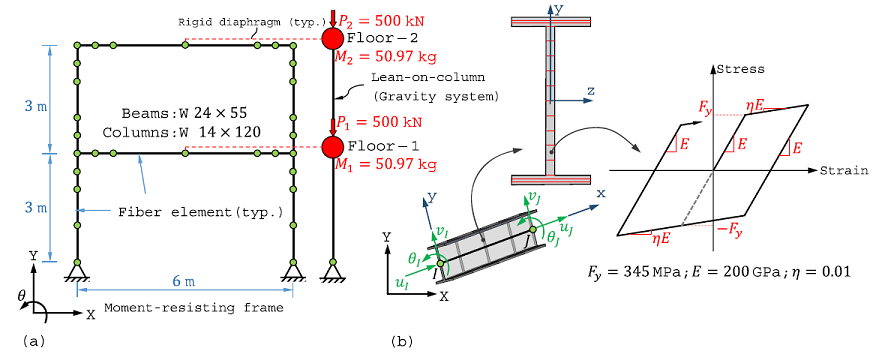

Nonlinear seismic response of a MRF
March 2020, By Amir Hossein Namadchi
This is an OpenSeesPy simulation of a moment resisting frame subjected to seismic excitation. The model was introduced by C. Kolay & J. M. Ricles in their paper entitled Assessment of explicit and semi-explicit classes of model-based algorithms for direct integration in structural dynamics. The beams and columns of the MRF are modeled using dispBeamColumn fiber elements. The gravity load resisting system associated with the MRF is modeled using a lean-on column composed of linear elastic beam-column elements with 2nd Order $P-\Delta$ effects [1].

import numpy as np
import opensees.openseespy as ops
import matplotlib.pyplot as plt
import sees
# %matplotlib notebook
Units
from opensees.units.mks import m, N, sec, inch, kg, gravity as g
import opensees.units.mks as units
KN = N*1000
# kg *= 1000 # *= gravity # TODO!!!!!!!!!!!
## Units
# m = 1.0 # Meters
# KN = 1.0 # KiloNewtons
# sec = 1.0 # Seconds
# inch = 0.0254*m # inches
# kg = KN*(sec**2)/m # mass unit (derived)
# g = 9.81*(m/sec**2) # gravitational constant
inch
Output:
0.0254
Earthquake record
This will load 1994 Northridge earthquake ground motion record (Canyon Country - W Lost Cany station) downloaded for the PEER website. Then, the record is scaled by a factor of 3 as follows (scaling could also be done when defining timeSeries):
dt = 0.01*sec
northridge = np.loadtxt('RSN960_NORTHR_LOS270.AT2', skiprows=4).flatten()
northridge = np.column_stack((np.arange(0,len(northridge)*dt, dt),
northridge*3*g))
Model Definition
Geometry
Node coordinates and element connectivity are defined.
model = ops.Model(ndm=2, ndf=3)
## Main Nodes
# Node Coordinates Matrix (size : nn x 2)
node_coords = np.array([[0,0],[6,0],
[0,1],[6,1],
[0,2],[6,2],
[0,2.5],[6,2.5],
[0,3],[0.5,3],[1,3],[3,3],[5,3],[5.5,3],[6,3],
[0,3.5],[6,3.5],
[0,4],[6,4],
[0,5],[6,5],
[0,5.5],[6,5.5],
[0,6],[0.5,6],[1,6],[3,6],[5,6],[5.5,6],[6,6]
], dtype = np.float64)*m
## Main Elements
# Element Connectivity Matrix (size: nel x 2)
connectivity = [[1, 3], [3, 5], [5, 7], [7, 9],
[9, 10], [10, 11], [11, 12], [12, 13],
[13, 14], [14, 15], [15, 8], [8, 6],
[6, 4], [4, 2], [9, 16], [16, 18],
[18, 20], [20, 22], [22, 24], [24, 25],
[25, 26], [26, 27], [27, 28], [28, 29],
[29, 30], [30, 23], [23, 21], [21, 19],
[19, 17], [17, 15]]
# Get Number of elements
nel = len(connectivity)
# Distinguish beams and columns by their element tag ID
all_the_beams = list(range(5, 10+1)) + list(range(20, 25+1))
all_the_cols = list(np.setdiff1d(np.arange(1, nel+1),
all_the_beams))
Sections & Material
sections are defined in dict which is quite self-explanatory.
# Main Beams and Columns
sections = {'W24x55':{'d':23.57*inch, 'tw':0.395*inch,
'bf':7.005*inch, 'tf':0.505*inch,
'A':16.2*(inch**2),
'I1':1350*(inch**4), 'I2':29.1*(inch**4)},
'W14x120':{'d':14.48*inch, 'tw':0.590*inch,
'bf':14.670*inch, 'tf':0.940*inch,
'A':35.3*(inch**2),
'I1':1380*(inch**4), 'I2':495*(inch**4)}
}
# Leaning columns section properties
leaning_col = {'A':(9.76e-2)*m**2,
'I1':(7.125e-4)*m**4}
# Material properties
F_y = 345000*(KN/m**2) # yield strength
E_0 = 2e8*(KN/m**2) # initial elastic tangent
eta = 0.01 # strain-hardening ratio
rho = 7850*(kg/m**3) # mass density
Adding to the Domain
# Nodal loads and Masses
lumped_mass = 50.97*kg # seismic floor mass
P_1 = 500*KN # Nodal loads
# Adding nodes to the domain
## Main Nodes
for n in range(len(node_coords)):
model.node(n+1, *node_coords[n])
## Fictitious Nodes (Leaning columns)
model.node(100,*[7.0, 0.0]) # @ Base
model.node(101,*[7.0, 3.0],
'-mass', *[lumped_mass, 0.00001, 0.00001]) # @ Story 1
model.node(102,*[7.0, 6.0],
'-mass', *[lumped_mass, 0.00001, 0.00001]) # @ Story 2 (roof)
# Material
# -> uniaxial bilinear steel material with kinematic hardening
model.uniaxialMaterial('Steel01', 1, F_y, E_0, eta)
# Adding Sections
## Beams
# model.section('WFSection2d', 1, 1,
# sections['W24x55']['d'],
# sections['W24x55']['tw'],
# sections['W24x55']['bf'],
# sections['W24x55']['tf'], 10, 3)
model.section('Fiber', 1, shape=("W24x55", 1, (10,3), units))
## Columns
model.section('Fiber', 2, shape=("W14x120", 1, (10,3), units))
# model.section('WFSection2d', 2, 1,
# sections['W14x120']['d'],
# sections['W14x120']['tw'],
# sections['W14x120']['bf'],
# sections['W14x120']['tf'], 10, 3)
# Boundary Conditions
## Fixing the Base Nodes
for n in [1, 2, 100]:
model.fix(n, 1, 1, 0)
## Rigid floor diaphragm
model.equalDOF(12, 101, 1)
model.equalDOF(27, 102, 1)
# Transformations & Integration
## Transformation
model.geomTransf('Linear', 1) # For Beams
model.geomTransf('PDelta', 2) # For leaning Columns
## Integration scheme
model.beamIntegration('Lobatto', 1, 1, 5) # For Beams
model.beamIntegration('Lobatto', 2, 2, 5) # For Columns
# Adding Elements
## Beams
for e in all_the_beams:
model.element('DispBeamColumn',
e, *connectivity[e-1], 1, 1,
'-cMass', rho*sections['W24x55']['A'])
## Columns
## -> OpenseesPy cannot handle numpy int types
## -> so I had to convert them to primitive python int type
for e in list(map(int, all_the_cols)):
model.element('DispBeamColumn', e, *connectivity[e-1], 1, 2,
'-cMass', rho*sections['W14x120']['A'])
## Leaning Columns
model.element('ElasticBeamColumn', nel+1, *[100, 101],
leaning_col['A'], E_0, leaning_col['I1'], 2)
model.element('ElasticBeamColumn', nel+2, *[101, 102],
leaning_col['A'], E_0, leaning_col['I1'], 2)
Draw Model
The model can now be drawn using sees:
sees.render(model)
model.print("-json", file="model.json")
Output:
![]()
<Figure size 640x480 with 1 Axes>
Damping Model
The model assumes 2% damping for the first and second modes of the system according to rayleigh’s damping model. for two modes, the damping coefficients can be obtained by:
$$ \left( \begin{array}{l} {\alpha _0}\\ {\alpha _1} \end{array} \right) = 2\frac{{{\omega _m}{\omega _n}}}{{\omega _n^2 - \omega _m^2}}\left[ {\begin{array}{*{20}{c}} {{\omega _n}}&{ - {\omega _m}}\\ { - 1/{\omega _n}}&{1/{\omega _m}} \end{array}} \right]\left( \begin{array}{l} {\zeta _m}\\ {\zeta _n} \end{array} \right)\ $$So, we need to perform an eigen analysis to obtain first two natural frequencies.
# Building Rayleigh damping model
omega = np.sqrt(model.eigen('-fullGenLapack', 2))
print('Two first periods are:', 2*np.pi/omega)
a_m, b_k = 2*((omega[0]*omega[1])/(omega[1]**2-omega[0]**2))*(
np.array([[omega[1],-omega[0]],
[-1/omega[1],1/omega[0]]])@np.array([0.02,0.02]))
## Rayleigh damping based on initial stiffness
model.rayleigh(a_m, 0, b_k, 0)
Output:
Two first periods are: [1.17694844e-06 1.74174909e-07]
Analysis
Gravity Analysis
# Time Series
model.timeSeries('Linear', 1) # For gravitional loads
# Load Pattern
model.pattern('Plain', 1, 1)
model.load(101, *[0.0, -P_1, 0.0])
model.load(102, *[0.0, -P_1, 0.0])
# Settings
model.constraints('Transformation')
model.numberer('RCM')
model.system('ProfileSPD')
model.test('NormUnbalance', 0.000001, 100)
model.algorithm('Newton')
model.integrator('LoadControl', 0.1)
model.analysis('Static')
# Perform static analysis
assert model.analyze(10) == 0
Output:
StaticAnalysis::analyze - the Algorithm failed at step: 0 with domain at load factor 0.1
Time History Analysis
# Set time to zero
model.loadConst('-time', 0.0)
model.wipeAnalysis()
# Time Series
model.timeSeries('Path', 2, dt=dt, # For EQ
values=northridge[:,1],
time = northridge[:,0])
# Load Pattern
model.pattern('UniformExcitation', 2, 1, '-accel', 2)
# Settings
model.constraints('Plain')
model.numberer('RCM')
model.system('ProfileSPD')
model.test('NormUnbalance', 0.0000001, 100)
model.algorithm('Newton')
model.integrator('Newmark', 0.5, 0.25)
model.analysis('Transient')
# Record some responses to plot
time_lst =[] # list to hold time stations for plotting
d_lst = [] # list to hold roof displacments
for i in range(len(northridge)):
model.analyze(1, dt)
time_lst.append(model.getTime())
d_lst.append(model.nodeDisp(27,1))
Visualization
Time history of the horizontal displacement of the roof is plotted here
plt.figure(figsize=(12,4))
plt.plot(time_lst, np.array(d_lst), color = '#d62d20', linewidth=1.75)
plt.ylabel('Horizontal Displacement (m)', {'fontstyle':'italic','size':14})
plt.xlabel('Time (sec)', {'fontstyle':'italic','size':14})
plt.grid()
plt.yticks(fontsize = 14)
plt.xticks(fontsize = 14);
References
-
Kolay, C. and Ricles, J.M., 2016. Assessment of explicit and semi‐explicit classes of model‐based algorithms for direct integration in structural dynamics. International Journal for Numerical Methods in Engineering, 107(1), pp.49-73.